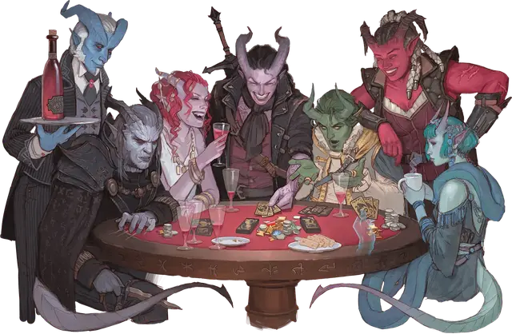

Тифлинг
Tiefling

Тип существа Гуманоид
Размер Средний (рост около 4-7 футов) или Маленький (рост около 3-4 футов); выберите вместе с видом
Скорость 30 футов
Тифлинги либо рождаются на Нижних планах, либо происходят от живущих там исчадий. Каждый тифлинг связан кровными узами с дьяволом, демоном или каким-либо другим Исчадием. Эта связь с Нижними планами — наследие тифлинга, которое сулит могущество, но не оказывает влияния на моральный компас тифлинга.
Выбор каждого тифлинга — стоит ему принять или оплакивать свое наследие. Три варианта наследия описаны ниже.
Инфернальное наследие
Дьявольское наследие связывает тифлингов с Геенной, с Девятью преисподними и с бушующими полями сражений Ахерона. Для таких тифлингов, ведущих свой род от дьяволов, характерны такие физические черты, как рожки, шипы, хвосты, золотистые глаза и слабый запах серы или дыма.
Наследие Бездны
Энтропия Бездны, хаос Пандемониума и отчаяние Карцери отзываются в тифлингах с наследием Бездны. Рожки, мех, клыки и специфические запахи — вот типичные физические черты таких тифлингов; в жилах большинства из них течёт кровь демонов.
Хтоническое наследие
Обладающие хтоническим наследием тифлинги ощущают не только притяжение Карцери, но и жадность Геенны и мрак Аида. Некоторые из этих тифлингов страшны, как трупы, другие обладают неземной красотой суккуба, третьи разделяют физические черты с ночными каргами, юголотами или иными Нейтрально-Злыми предками из исчадий.
Особенности
Вы обладаете следующими особенностями вида:
Тёмное зрение. У вас есть Тёмное зрение дальностью 60 футов.
Наследие исчадий. Вы получили наследие, наделяющее вас сверхъестественными способностями. Выберите наследие из таблицы "Наследия исчадий". Вы получаете преимущества 1-го уровня выбранного наследия.
Когда вы достигаете 3-го и 5-го уровней персонажа, вы изучаете по одному заклинанию, как показано в таблице. У вас всегда подготовлено это заклинание. Вы можете сотворить его один раз без ячейки заклинаний, и вы восстанавливаете способность сделать это по завершению Долгого отдыха. Вы также можете сотворять его с помощью имеющихся у вас ячеек заклинаний подходящего уровня.
Вашей заклинательной характеристикой для этих заклинаний является Интеллект, Мудрость или Харизма (вы выбираете вместе с наследием).
Потустороннее присутствие. Вы знаете заговор Чудотворство. Когда вы сотворяете его этой особенностью, заклинательной характеристикой для него будет характеристика, выбранная вами для вашей особенности Наследие исчадий.
Наследия исчадий
| Наследие | 1-й уровень | 3-й уровень | 5-й уровень |
| Инфернальное наследие | У вас есть Сопротивление урону Огнём. Вы также знаете заговор Огненный снаряд. | Адское возмездие | Тьма |
| Наследие Бездны | У вас есть Сопротивление урону Ядом. Вы также знаете заговор Ядовитые брызги. | Луч болезни | Удержание личности |
| Хтоническое наследие | У вас есть Сопротивление Некротическому урону. Вы также знаете заговор Леденящее прикосновение. | Псевдожизнь | Луч слабости |